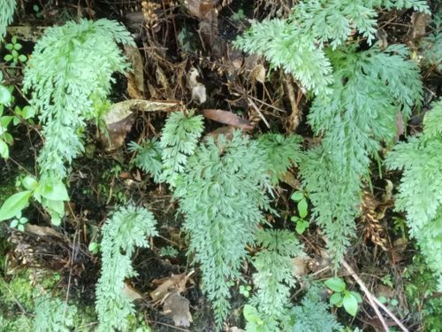

Hymenophyllaceae
Filmy Fern Family
Hymenophyllaceae, the filmy fern family, is a unique group of leptosporangiate ferns belonging to the order Hymenophyllales. They are renowned for their delicate, translucent fronds (leaves), which are typically only one cell layer thick between the veins. This adaptation restricts them to very humid, shaded environments. The family includes numerous genera and over 600 species, found mostly in tropical rainforests but also extending into temperate moist habitats worldwide. Their sporangia are borne in marginal sori protected by distinctive tubular or two-lipped indusia.
Overview
Hymenophyllaceae stands out among ferns due to the exceptionally thin lamina of their fronds, usually just a single layer of cells thick. This "filmy" characteristic allows them to absorb water and nutrients directly through the leaf surface but also makes them highly susceptible to desiccation, confining them to perpetually moist, shaded habitats like rainforests, cloud forests, stream banks, and waterfall spray zones. They represent an early diverging lineage within the leptosporangiate ferns (Polypodiidae).
These ferns exhibit a wide range of frond forms, from simple and undivided to finely dissected and multi-pinnate, despite their delicate nature. They typically grow as epiphytes on tree trunks and branches, epipetrics on wet rocks, or occasionally terrestrially on saturated soil or humus. Their rhizomes are slender and creeping, covered in hairs rather than scales. Reproduction occurs via spores produced in marginal sori, which are characteristically protected by cup-shaped, tubular, or bivalved indusia. Some species also have persistent, filamentous gametophytes that can reproduce vegetatively.
Quick Facts
- Scientific Name: Hymenophyllaceae
- Common Name: Filmy Fern Family
- Number of Genera: ~8-9+ (modern classification, e.g., Hymenophyllum, Trichomanes, Crepidomanes, Didymoglossum)
- Number of Species: Approximately 600+
- Distribution: Pantropical, extending into temperate rainforests and moist habitats globally.
- Evolutionary Group: Ferns (Division Pteridophyta / Monilophyta, Class Polypodiopsida, Subclass Polypodiidae, Order Hymenophyllales, Type: Leptosporangiate)
Key Characteristics
Rhizome and Habit
Plants are typically small, delicate ferns. The rhizome is usually long-creeping, slender (often thread-like or wiry), and covered with hairs (trichomes), not scales. They grow as epiphytes (on other plants), epipetrics (on rocks), or sometimes terrestrially, always in very humid, shaded environments.
Fronds (Leaves)
Fronds are the most distinctive feature. The lamina (blade) is typically extremely thin, consisting of only one cell layer between the veins (unistratose), making it appear translucent or "filmy". Fronds lack stomata and have poorly developed cuticle, absorbing water directly. Size ranges from very small (less than 1 cm) to medium (up to ~50 cm, rarely larger). Frond shape is highly variable: simple and entire, lobed, pinnatifid, or 1- to multi-pinnately compound. Young fronds exhibit circinate vernation. Petioles are usually slender.
Reproductive Structures (Sori and Sporangia)
Reproduction is via spores produced in leptosporangia (thin-walled sporangia developing from a single cell, possessing an annulus). The sporangia are grouped into sori located at the margins of the frond or frond segments, often terminating a vein.
A key feature is the indusium (protective covering over the sorus), which is typically tubular, cup-shaped (urceolate), or bivalved (composed of two flaps), surrounding the base of the sorus. The sporangia develop on an elongated receptacle that often protrudes from the mouth of the indusium (sometimes called a "bristle"). The annulus on the sporangium is typically oblique or transverse (not vertical like in many other ferns) and aids in spore dispersal.
Spores are typically trilete (having a three-branched scar), green (containing chlorophyll), and relatively short-lived. The gametophyte generation is often filamentous (resembling branched algae) or sometimes ribbon-like and thalloid. In some species, the gametophyte is long-lived and can reproduce vegetatively, sometimes existing independently of the sporophyte generation.
Field Identification
Identifying Hymenophyllaceae primarily involves recognizing their extremely delicate, translucent fronds (one cell thick) and their characteristic marginal sori enclosed in specialized indusia. Habitat is also a strong clue.
Primary Identification Features
- Filmy Fronds: Lamina is translucent, appearing very thin (one cell thick between veins). Often dark green.
- Delicate Habit: Small, fragile plants.
- Marginal Sori: Sori (clusters of sporangia) are located at the edges of the frond segments.
- Tubular or Bivalved Indusium: Each sorus is protected by a distinctive cup-like, tubular, or two-flapped indusium.
- Slender, Hairy Rhizome: Rhizome is thin, creeping, and covered in hairs (not scales).
- Very Moist, Shaded Habitat: Found only in constantly humid environments (rainforests, waterfall spray, wet rocks).
Secondary Identification Features
- Elongated Receptacle: Often visible as a bristle extending from the indusium.
- Lack of Stomata: Diagnostic but requires microscopy.
- Green Spores: Diagnostic but requires microscopy or observation during dispersal.
Seasonal Identification Tips
- Moisture Dependence: Plants are most apparent during consistently wet periods. They may curl up or appear blackish when dry but can often rehydrate (poikilohydry).
- Fertile Fronds: Look for the distinctive marginal sori with their indusia for confirmation. Sporulation times vary.
- Gametophytes: Sometimes visible as patches of green filaments or ribbons on moist substrates, especially if sporophytes are absent.
Common Confusion Points
- Mosses and Liverworts: Can form delicate green mats in similar habitats. However, they lack true roots, rhizomes, and the characteristic fern frond structure with veins. Their reproductive structures (capsules or archegoniophores/antheridiophores) are very different from fern sori. Cellular structure is also different (moss leaves often >1 cell thick except at margin, liverwort thalli complex or leafy).
- Other Delicate Ferns (e.g., some small Aspleniaceae, Polypodiaceae): May be small and grow in moist shade, but their fronds are typically more than one cell thick (check translucency). Their sori are usually on the frond surface (not marginal) and have different shapes and indusial types (or lack indusia).
- Algae: Filamentous algae can resemble filmy fern gametophytes but lack the organized structure and cellular differentiation.
Field Guide Quick Reference
Look For:
- Delicate fern with filmy/translucent fronds (1 cell thick)
- Marginal sori
- Tubular or bivalved indusia enclosing sori
- Slender, creeping, hairy rhizome
- Very humid, shaded habitat (epiphytic, epipetric)
Key Variations:
- Frond shape (simple to highly dissected)
- Indusium shape (tubular vs. bivalved)
- Presence/length of protruding receptacle
- Overall size
Notable Examples
The family contains numerous genera, often segregated from the traditional broad concepts of Hymenophyllum and Trichomanes.

Hymenophyllum Sm.
Filmy Fern (Genus; species include H. tunbrigense, H. demissum)
One of the largest genera, typically characterized by having bivalved indusia (two flaps protecting the sorus). Fronds are usually pinnately divided. Found worldwide in suitable habitats.

Trichomanes L.
Bristle Fern, Killarney Fern (Genus; species include T. speciosum, T. boschianum)
Often characterized by having tubular or cup-shaped indusia, often with a protruding bristle-like receptacle. Includes species famous for their independent, persistent gametophytes (e.g., T. speciosum).

Crepidomanes (C.Presl) C.Presl
(Genus; species include C. minutum, C. intramarginale)
A large genus segregated from Trichomanes, often includes very small species with finely dissected fronds. Typically has tubular/cup-shaped indusia. Common in the Paleotropics.

Didymoglossum Desv.
(Genus; species include D. membranaceum, D. petersii)
Often includes species with very small, simple or lobed fronds, sometimes forming dense mats. Typically has tubular indusia with flaring mouths. Found in tropical and some temperate regions.
Phylogeny and Classification
Hymenophyllaceae is the sole family in the order Hymenophyllales. This order represents an early diverging lineage within the subclass Polypodiidae, which encompasses the vast majority of living ferns (leptosporangiates). They are distinct from other major fern orders like Polypodiales, Cyatheales, or Salviniales.
Their unique morphology, particularly the unistratose lamina and specialized sorus structure, reflects their ancient origins and long evolutionary history adapting to hyper-humid environments. Molecular studies have led to significant rearrangements within the family, splitting the historically broad genera Hymenophyllum and Trichomanes into multiple, more narrowly defined genera to better reflect evolutionary relationships.
Position in Plant Phylogeny
- Kingdom: Plantae
- Division: Pteridophyta / Monilophyta (Ferns and Allies)
- Class: Polypodiopsida
- Subclass: Polypodiidae (Leptosporangiate Ferns)
- Order: Hymenophyllales
- Family: Hymenophyllaceae
Evolutionary Significance
Hymenophyllaceae holds considerable evolutionary significance:
- Extreme Adaptation: The unistratose frond is a remarkable adaptation to low light and high humidity, essentially functioning like a bryophyte in terms of water relations (poikilohydry).
- Early Leptosporangiate Lineage: Provides insights into the early evolution and diversification of leptosporangiate ferns.
- Gametophyte Diversity: Exhibits unusual gametophyte forms (filamentous) and life history strategies (persistent, independently reproducing gametophytes).
- Indicator Species: Their presence indicates high humidity and relatively stable environmental conditions, making them valuable ecological indicators.
- Systematic Challenges: The morphological simplicity and convergence have historically made classification difficult, highlighting the power of molecular data in resolving relationships.